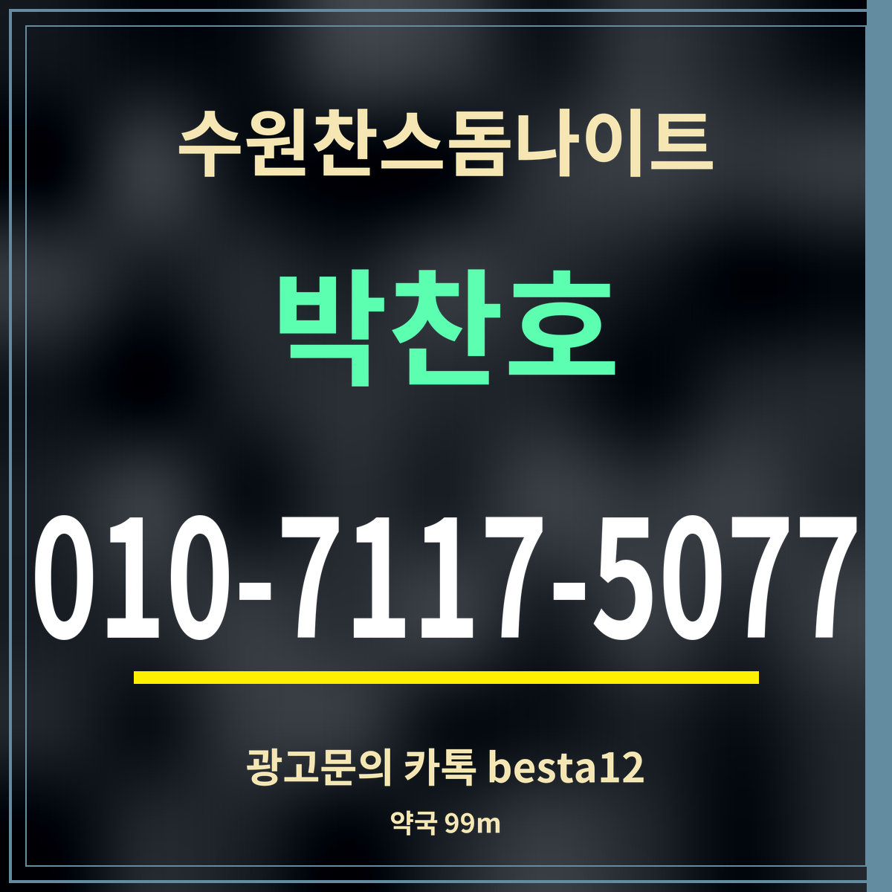

광고19세 미만 출입 금지
수원찬스돔나이트 근처 약국 정리, 가장 가까운 99m
약국 출처: 카카오맵 검색 「권선동 약국」 · 영업시간 칸 없음

핵심 3줄: 가장 가까운 약국은 직선 99m(경수대로 374), 다음은 164m(경수대로 373)입니다. 500m 안에 약국이 네 곳 있습니다. 늦은 밤 영업 여부는 목록에 없습니다.
거리순 약국
| 약국 | 주소 | 거리 |
|---|---|---|
| 매일열린약국 | 경수대로 374 | 99m |
| 오가네약국 | 경수대로 373 | 164m |
| 세광약국 | 세권로165번길 30-2 | 352m |
| 홈케어생명약국 | 세권로 157 | 497m |
| 보원약국 | 세권로 197 | 502m |
| 휴베이스 사랑약국 | 권광로 145 | 539m |
| 인화약국 | 권광로 77 | 642m |
| 온달약국 공공심야약국 | 권중로 31 | 897m |
미리 챙기면 좋은 것
밤늦게는 문을 닫는 약국이 많습니다. 두통약이나 소화제처럼 자주 찾는 상비약이 필요하다면, 저녁에 수원찬스돔나이트로 오는 길에 미리 사 두는 편이 확실합니다. 약국 영업시간은 목록에 없어 지도 앱에서 그날 영업 여부를 확인하세요.
몸이 크게 안 좋을 때는 약국보다 병원이 먼저입니다. 급할 때는 119에 연락하세요. 가까운 응급실 위치는 이 사이트의 다른 쪽에서 따로 정리합니다.
약국 가는 길
가장 가까운 두 약국은 경수대로 373·374로 번지가 이웃해 있고, 직선거리로 99m와 164m입니다. 세권로 쪽 약국 세 곳은 직선 350~510m 거리입니다. 표의 여섯 곳은 모두 권선구 주소이고, 가장 먼 곳도 직선 539m입니다. 처방전이 있다면 문 연 약국을 지도 앱에서 먼저 찾아보세요.
자주 묻는 것
가장 가까운 약국은요?
경수대로 374의 약국으로 직선 99m입니다.
경수대로 374의 약국으로 직선 99m입니다.
밤에도 여나요?
약국 영업시간은 목록에 없어 적지 않았습니다. 지도 앱에서 확인하세요.
약국 영업시간은 목록에 없어 적지 않았습니다. 지도 앱에서 확인하세요.
몸이 크게 안 좋으면요?
약국보다 병원이 먼저입니다. 급하면 119에 연락하세요.
약국보다 병원이 먼저입니다. 급하면 119에 연락하세요.
한 줄 정리: 수원찬스돔나이트 근처 약국은 99m부터 — 상비약은 저녁에 미리 챙기세요.
물과 현금은 같은 건물 편의점에서.
이 페이지는 광고이며, 업소 제공 정보를 받아 실었습니다(담당 박찬호). 확인일 2026-09-27.